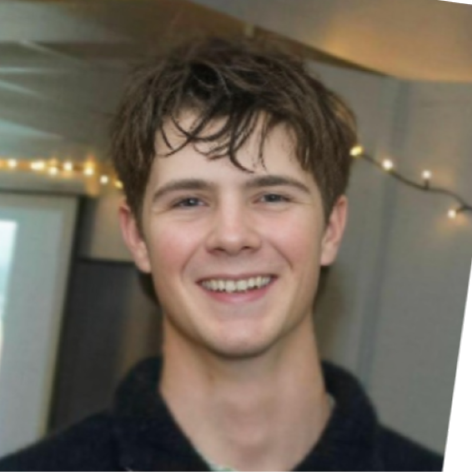

Electrical Engineering | University of Canterbury
About Me
I am an electrical engineer with a passion for power systems, embedded hardware, intelligent software, and practical technology that solves real problems.

Electrical Engineering | University of Canterbury
I am an electrical engineer with a passion for power systems, embedded hardware, intelligent software, and practical technology that solves real problems.
Load-flow analysis, fault studies, grid planning, renewable integration, circuit loading, voltage limits, and technical reporting.
PCB design, C/C++ firmware, CAN-bus decoding, sensor integration, displays, enclosure design, and prototype validation.
VHDL modules, FPGA state machines, real-time filtering, cooperative scheduling, user interfaces, and demonstration media.